Name on top, job on the bottom, an oval between the colour and the character. Names in New York (the serif), jobs in the second face of each option. Dorothy Rye is in every row so the four styles can be compared side by side.
A solid parchment oval, like a cameo brooch. The character sits inside it. Job in italic serif. Calmest of the four.
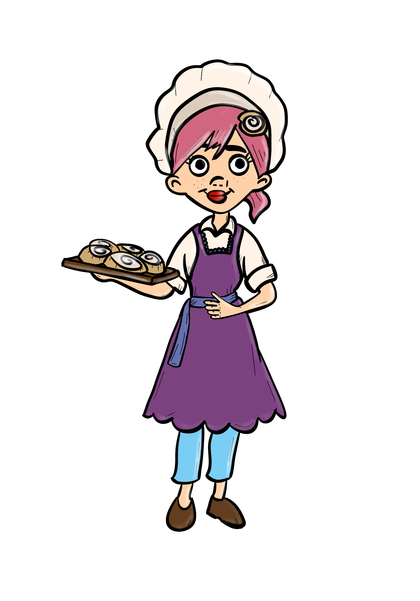
The Baker
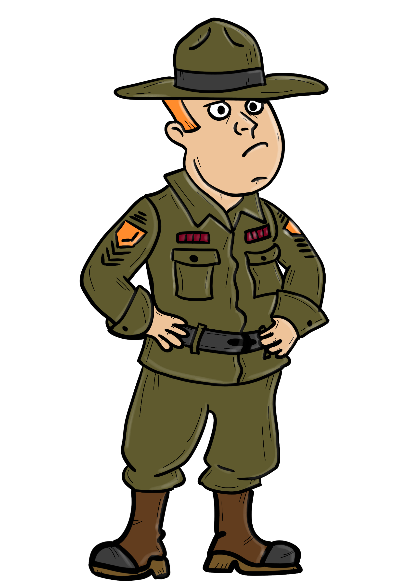
The Sergeant Major
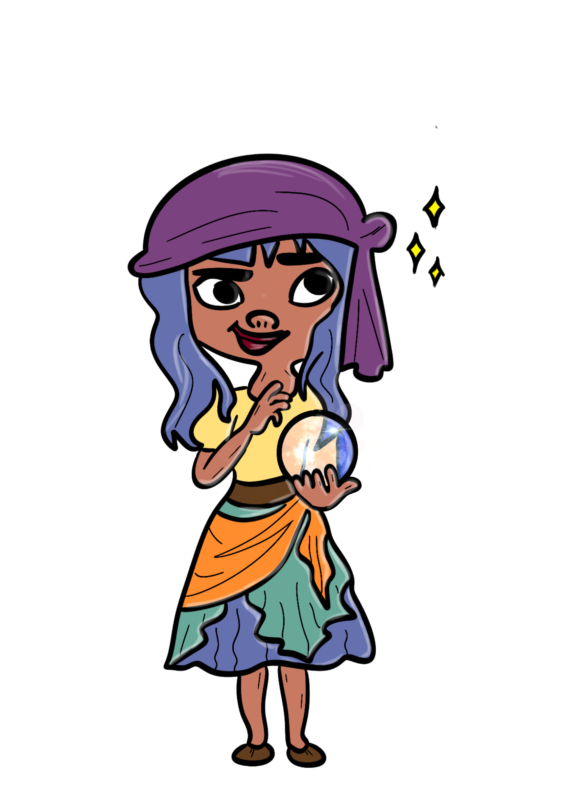
The Medium
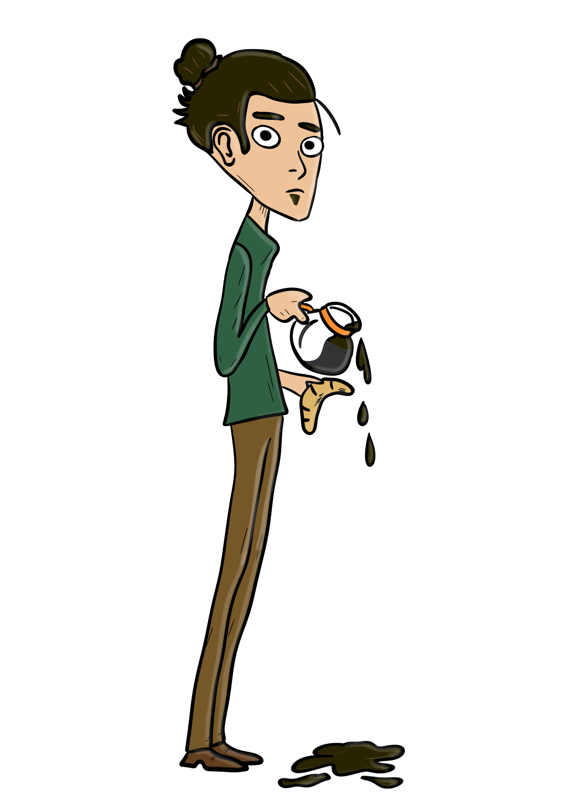
The Barista
The house wallpaper faintly on the colour, a brass ring, and the character standing up over the top of it. Job in small capitals with a brass rule. Closest to the phone's look.
Baker
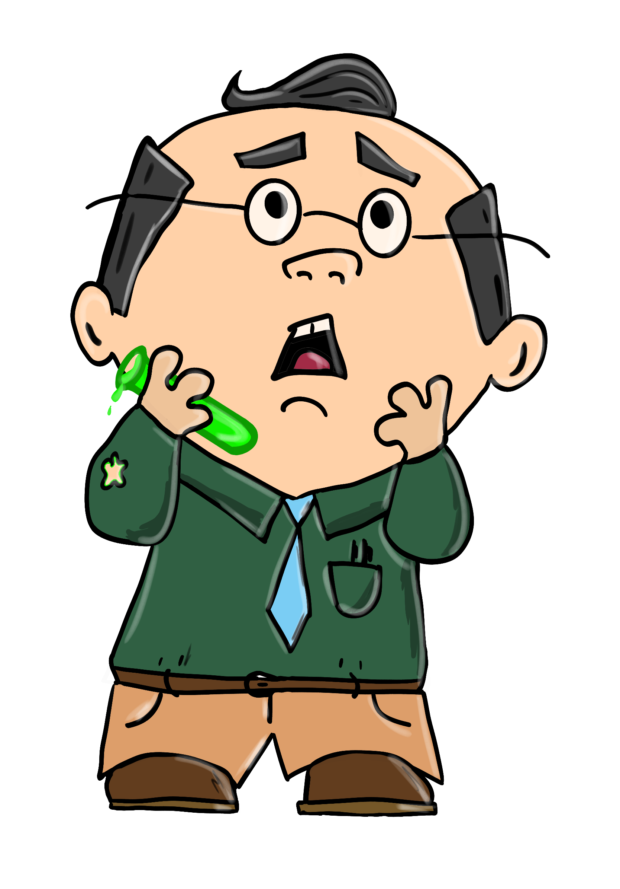
Scientist
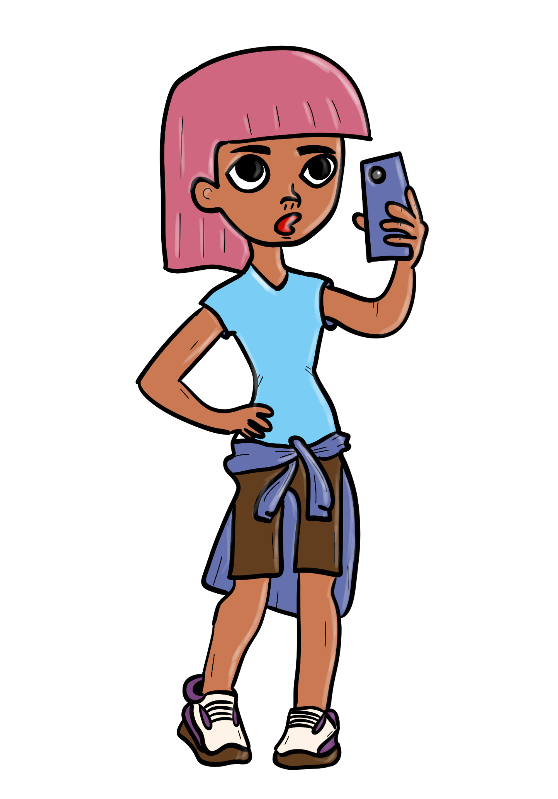
Influencer
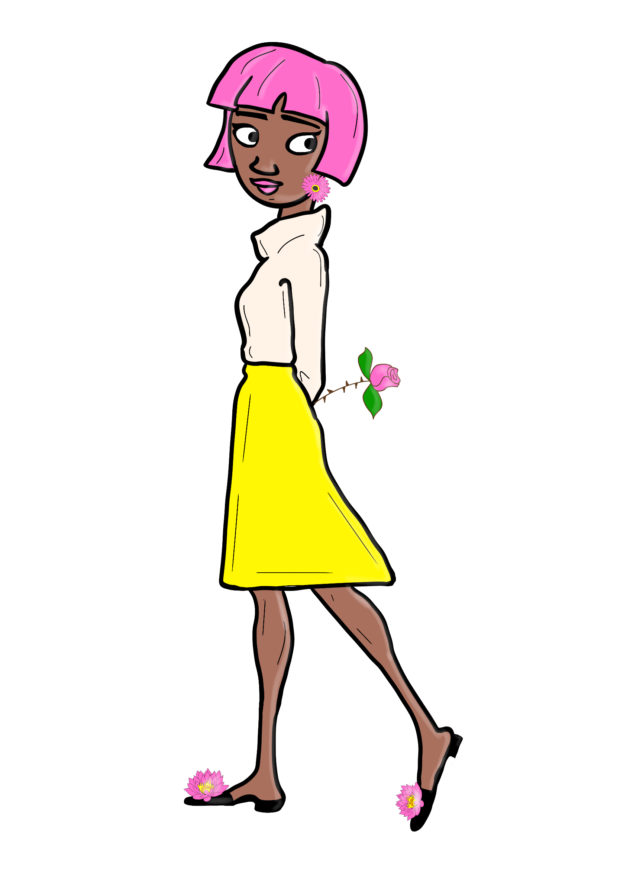
Florist
A darker band top and bottom for the name and the job, and the oval is a lighter tint of the card's own colour. Job in bold sans, brass. Reads well from across a room.
The Baker
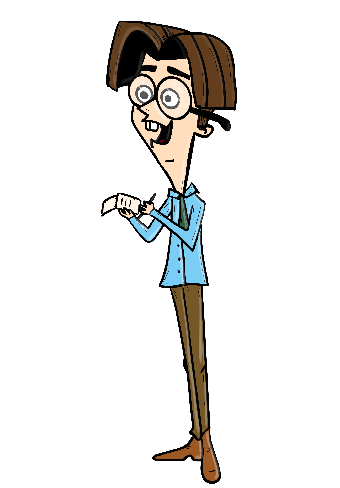
The Reporter
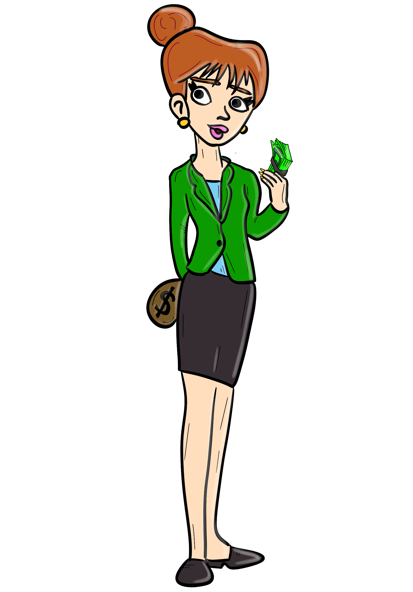
The Banker
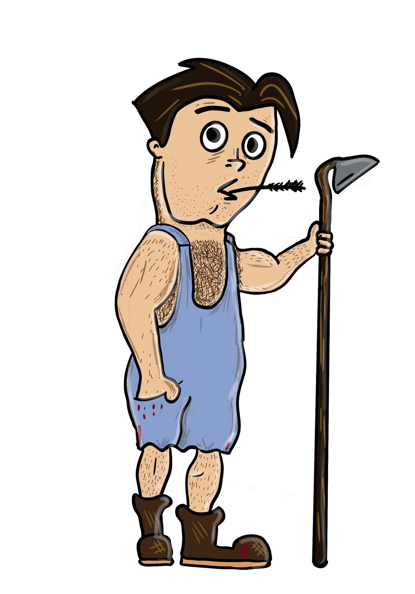
The Farmer
A double brass line as a picture frame, the character drawn biggest and breaking out over it. Job in brass italic serif. Most "playing card" of the four.
The Baker
The Doctor
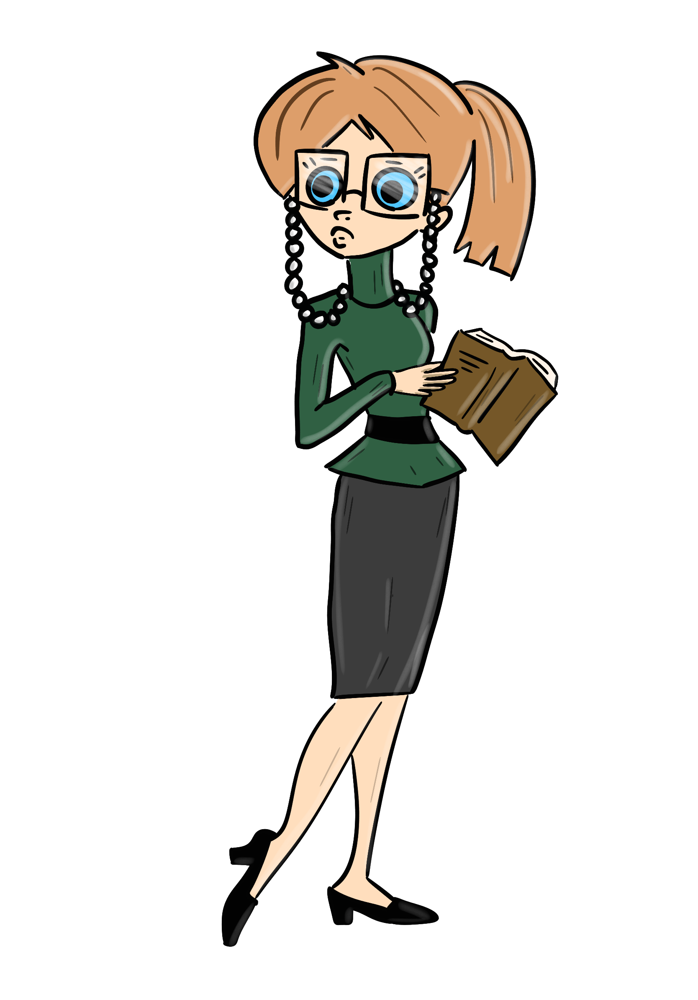
The Librarian
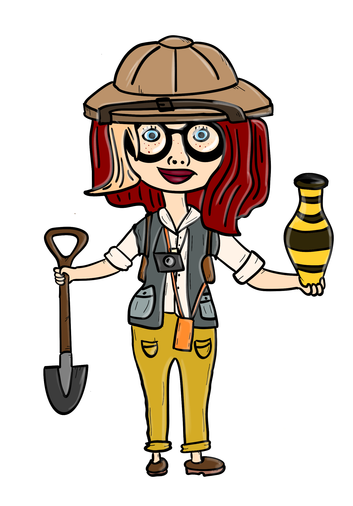
The Professor